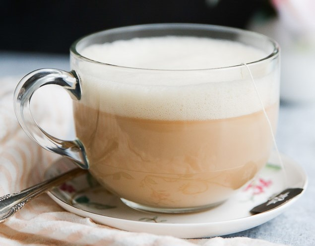

How to Make a Good Cup of London Fog
By: Caitlyn Franke
Ingredients
- 1 Bag of Earl Grey Tea
- 3oz of Water
- 3oz of Warm Milk
- Sugar/Sweetener of preferance
- 1-3 teaspoons Vanilla Extract
- Optional: Lavender Extract
Directions
- Heat up your water to about 90oC (or 190oF)
- Steep the tea in the hot water for around 3-5 minuets
- Heat up your milk to about 60oC (or 140oF). Be careful to NOT over heat the milk.
- Combine the tea and warm milk together in a mug that can hold 6oz.
- Stir in your prefered sugar or sweetener to personal preferance. 1-3 teaspoons recomended
- Stir in about 1-2 teaspoons of Vanilla Extract
- Optional: Stir in lavender extract to preferance